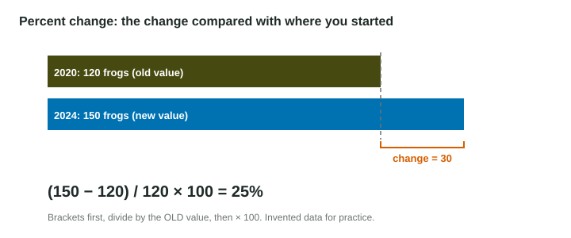

Percent calculations show up on almost every free-response calculation question: the percent of energy from coal, the percent decrease in a fish catch, the percent change in a population. Chief Reader Reports name the same slips year after year: no brackets around the subtraction, dividing by the wrong number, and forgetting to multiply by 100. This chapter fixes all three.
What a percent is
A percent is a number out of 100. "26%" means 26 out of every 100. There are three common jobs.
| Job | Setup | Example |
|---|---|---|
| What percent is a part of a whole? | part / whole × 100 | 650 kg recycled of 2,500 kg: (650 / 2,500) × 100 = 26% |
| What is a percent of a quantity? | (percent / 100) × quantity | 18% of 4.0 million GWh: 0.18 × 4,000,000 = 720,000 GWh |
| By what percent did it change? | (new - old) / old × 100 | 120 to 150 frogs: (150 - 120) / 120 × 100 = 25% |
A percent of a quantity keeps the quantity's unit and scale: 18% of 4.0 million GWh is 0.72 million GWh, or 720,000 GWh. Do not drop the "million".
Percent change, step by step

- Subtract, in brackets: (new - old). The sign tells you the direction: positive is an increase, negative a decrease.
- Divide by the old value, the starting point you are comparing with.
- Multiply by 100 to turn the fraction into a percent.
Worked example. A town's water use rose from 4,000 to 5,000 liters per day. Find the percent change.
Setup, as you would type it: (5000 - 4000) / 4000 * 100
Answer: 25% (an increase).
Without brackets, 5000 - 4000 / 4000 * 100 means , because a calculator divides before it subtracts. Dividing by the new value instead, 1,000 / 5,000, gives 20%, which is wrong.
Decreases
Worked example. Better insulation and new appliances cut a home's electricity use from 9,600 to 6,000 kWh a year.
Setup: (6000 - 9600) / 9600 * 100
Answer: , a 37.5% decrease. If the question asks for "the percent decrease", give 37.5%; the word "decrease" already carries the sign.
Percents of different starting values do not add
A fish population falls 50% and then rises 50%. Start at 100: it falls to 50, then rises by half of 50, to 75. It ends 25% lower, not back at 100, because the second percent is of a smaller number. In the same way, frogs that rise 25% (120 to 150) and then fall 10% (150 to 135) end up
Exam habits
- Type the setup with brackets and × 100 exactly as above; the setup is its own point.
- Give the answer with the % sign and say "increase" or "decrease" if asked.
- Check the size: a change from 120 to 150 cannot be 2,500% or 0.25%.